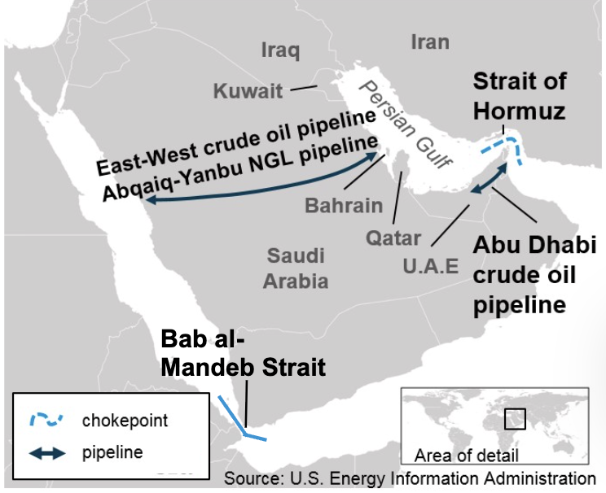

Executive Summary
The modern world runs on energy flows that move through a small number of narrow geographic corridors. These corridors—often called chokepoints—are not merely shipping routes. They are pressure valves for the global economy.
Recent events across multiple regions suggest that competition over these corridors is intensifying. The pattern becomes clearer when viewed alongside the expanding alignment of BRICS-associated states.
When the map of emerging geopolitical blocs is placed over the map of energy chokepoints, an unmistakable strategic reality appears:
Approximately 20% of the world's total oil consumption (or about one-fifth) moves through the Strait of Hormuz daily, making it the world's most critical oil chokepoint. And most of that oil is loaded onto tankers at Iran's Kharg Island.
Control of energy routes may become the decisive factor shaping the next phase of global power competition.
Charlemagne's Strategic Map Room: Persian Gulf Energy Corridor
Maps often reveal what headlines conceal.

Key energy corridors linking the Persian Gulf to Europe and global markets. Approximately one-fifth of the world’s oil supply moves through the Strait of Hormuz. Disruptions at Hormuz or Bab el-Mandeb would immediately impact global energy flows. Source: U.S. Energy Information Administration.
• Kharg Island export terminal
• Strait of Hormuz
• Bab el-Mandeb Strait
• Red Sea corridor to the Suez Canal
Strategic Chokepoints Under Watch
Several corridors dominate the movement of global oil and energy shipping:
Strait of Hormuz
As reported by the U.S. Energy Information Administration (eia.gov), the Strait of Hormuz, located between Oman and Iran, connects the Persian Gulf with the Gulf of Oman and the Arabian Sea. The strait is deep enough and wide enough to handle the world's largest crude oil tankers, and it is one of the world's most important oil chokepoints.
Bab el-Mandeb Strait
Connecting the Red Sea to the Gulf of Aden, this corridor links Middle Eastern energy to Europe through the Suez Canal.
Other Chokepoints in the Region
Suez Canal
A critical shortcut between Asia and Europe. Disruptions here force tankers to reroute thousands of miles around Africa.
Strait of Malacca
One of the world's busiest shipping lanes, essential for energy deliveries to East Asia.
Situation Assessment
Each of these locations sits along routes connecting major energy exporters with major industrial economies.
These chokepoints have historically remained open because the global economic system depended upon stability. But the international environment is shifting.
Several recent developments suggest growing pressure:
- increased military patrols around the Strait of Hormuz
- instability affecting shipping lanes in the Red Sea
- rising geopolitical tension across the Indo-Pacific
- expanding naval capabilities among regional powers
None of these developments alone signals an immediate crisis. But together, they indicate that the security of energy corridors is no longer taken for granted..
Focus on the observable developments before moving into interpretation.
Strategic Implications
When the BRICS+ alignment map is placed alongside global energy corridors, a deeper strategic relationship becomes visible.
Many of the countries involved in the emerging economic alignment are either:
- major energy producers
- critical transit states
- major energy consumers
This creates a triangular strategic system involving:
- Energy supply
- Energy transportation
- Energy settlement mechanisms
Control over any one of these elements can shift geopolitical leverage. Control over all three would reshape the international system.
This is why the competition surrounding energy chokepoints is unlikely to diminish in the coming years.
Prophetic Watch Assessment
Biblical prophecy frequently describes periods when the nations experience heightened instability, economic pressure, and the concentration of geopolitical power.
Responsible observers should resist premature conclusions. Not every crisis carries prophetic significance. Yet when global systems of energy, trade, and authority begin tightening simultaneously, students of both history and prophecy tend to pay closer attention.
Patterns sometimes emerge slowly before becoming unmistakable.
Some observers have drawn attention to language recorded in Jeremiah 49:37–38, which describes judgment against Elam — a region historically associated with southwestern Iran.
"I will terrify Elam before their enemies and before those who seek their life. I will bring disaster upon them—my fierce anger," declares the LORD.
"I will set my throne in Elam and destroy her king and officials," declares the LORD.
Whether present geopolitical developments ultimately align with this prophetic framework remains uncertain. Nevertheless, the pattern has drawn renewed attention among those who study both historical cycles and biblical prophecy.
Charlemagne’s Conclusion
Maps often reveal what headlines conceal.
When viewed individually, developments across the Persian Gulf, the Red Sea, and the Indo-Pacific appear unrelated.
But when the world’s energy chokepoints are plotted alongside the emerging alignment of nations, the pattern begins to clarify.
Power is not shifting randomly. It is moving along the routes where energy flows.
Which means the most consequential conflicts of the coming decade may not occur on conventional battlefields.
They may unfold along the narrow waterways through which the world’s oil quietly travels.
— Charlemagne